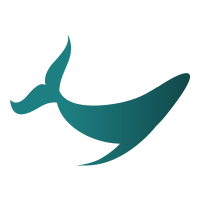

<nav class="navbar navbar-expand-lg navbar-light bg-light shadow-sm">
  <a class="navbar-brand" href="#"> Sharefish</a>
  <button class="navbar-toggler" type="button" data-toggle="collapse" data-target="#navbarSupportedContent" aria-controls="navbarSupportedContent" aria-expanded="false" aria-label="Toggle navigation">
    <span class="navbar-toggler-icon"></span>
  </button>

  <div class="collapse navbar-collapse" id="navbarSupportedContent">
    <ul class="navbar-nav mr-auto">
      <li class="nav-item">
        <a class="nav-link"  routerLinkActive="active" routerLink="/accueil">Accueil</a>
      </li>
      <li class="nav-item">
        <a class="nav-link" routerLink='/carte' >Carte</a>
      </li>
      <li class="nav-item">
        <a class="nav-link" href="#">Partager</a>
      </li>
      <li class="nav-item">
        <a class="nav-link" routerLink="/profil">Profil</a>
      </li>
 
    </ul>
    <form class="form-inline my-2 my-lg-0">
      <input class="form-control mr-sm-2" type="search" placeholder="Rechercher un poisson..." aria-label="Search">
      <button id="button-nav-seach" class="btn btn-primary my-2 my-sm-0" type="submit">Recherche</button>
      <button id="button-nav-filter" type="button" class="btn btn-outline-info ml-3">Filtres</button>
      
    </form>
  </div>
</nav>